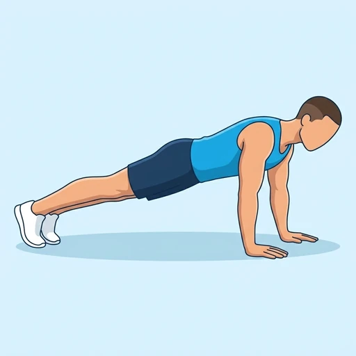

Plank Knee Tuck
A moving core drill performed from a high plank: the body holds its straight line while one knee is drawn in under the chest and sent back, alternating sides. Slower and more controlled than a mountain climber, it trains the abdominals and hip flexors while the shoulders and trunk stay braced.
Core · Bodyweight · Intermediate


Muscles worked by the Plank Knee Tuck
Primary
Secondary
Also called: hip flexor, iliopsoas, psoas, iliacus, hip flexors, abs.
Equipment
No equipment — this is a bodyweight exercise.
How to do the Plank Knee Tuck
- Set up in a high plank with the hands under the shoulders and the body in a straight line from head to heels.
- Press the floor away and brace the trunk so the hips neither sag nor pike.
- Draw one knee in towards the chest without letting the hips rise.
- Extend the leg back to the starting position under control.
- Repeat with the other leg and keep alternating for the desired number of repetitions.
Form tips
- Keep the hips level with the shoulders; letting them lift turns this into a pike.
- Pull the knee in with the abdominals rather than by hopping off the supporting foot.
- Keep the shoulders stacked over the wrists and push the floor away so the upper body does not sink.
At a glance
| Body part | Core |
|---|---|
| Category | Strength |
| Force type | Dynamic |
| Mechanic | Compound |
| Difficulty | Intermediate |
| Equipment | Bodyweight |
| Goals | Endurance, Strength |
| Tags | Core, Calisthenics, Knee safe, No axial load |
| MET | 5.0 (metabolic equivalent, for calorie estimates) |
| Unilateral | No |
| Bodyweight | Yes |
| Dataset id | plank-knee-tuck |
Plank Knee Tuck in German & Spanish
| German | Plank mit Knieanziehen |
|---|---|
| Spanish | Rodilla al Pecho en Plancha |
Descriptions, instructions and tips ship in all three languages in the JSON.
Related exercises
Exercise data (JSON)
The record below is exactly what exercises.json ships for this exercise — names, descriptions, instructions and tips in English, German and Spanish.
{
"id": "plank-knee-tuck",
"name_en": "Plank Knee Tuck",
"name_de": "Plank mit Knieanziehen",
"name_es": "Rodilla al Pecho en Plancha",
"description_en": "A moving core drill performed from a high plank: the body holds its straight line while one knee is drawn in under the chest and sent back, alternating sides. Slower and more controlled than a mountain climber, it trains the abdominals and hip flexors while the shoulders and trunk stay braced.",
"description_de": "Eine bewegte Rumpfübung aus der hohen Plank: der Körper bleibt in einer geraden Linie, während ein Knie unter die Brust gezogen und wieder zurückgeführt wird, im Wechsel. Langsamer und kontrollierter als ein Mountain Climber trainiert sie Bauchmuskulatur und Hüftbeuger, während Schultern und Rumpf angespannt bleiben.",
"description_es": "Un ejercicio dinámico de core desde la plancha alta: el cuerpo mantiene su línea recta mientras una rodilla se lleva bajo el pecho y vuelve al inicio, alternando lados. Más lento y controlado que un escalador, trabaja el abdomen y los flexores de cadera mientras hombros y tronco permanecen firmes.",
"category": "strength",
"force_type": "dynamic",
"mechanic": "compound",
"difficulty": "intermediate",
"body_part": "core",
"primary_muscles": [
"hip_flexors",
"rectus_abdominis"
],
"secondary_muscles": [
"anterior_deltoid",
"obliques",
"serratus_anterior",
"transverse_abdominis"
],
"goals": [
"endurance",
"strength"
],
"tags": [
"core",
"calisthenics",
"knee_safe",
"no_axial_load"
],
"variation_group": "plank",
"is_unilateral": false,
"is_bodyweight": true,
"instructions_en": [
"Set up in a high plank with the hands under the shoulders and the body in a straight line from head to heels.",
"Press the floor away and brace the trunk so the hips neither sag nor pike.",
"Draw one knee in towards the chest without letting the hips rise.",
"Extend the leg back to the starting position under control.",
"Repeat with the other leg and keep alternating for the desired number of repetitions."
],
"instructions_de": [
"Geh in die hohe Plank, die Hände unter den Schultern und der Körper in einer geraden Linie von Kopf bis Ferse.",
"Druck den Boden weg und spann den Rumpf an, damit die Hüfte weder durchhängt noch nach oben ausweicht.",
"Zieh ein Knie unter die Brust, ohne dass die Hüfte nach oben wandert.",
"Streck das Bein kontrolliert zurück in die Ausgangsposition.",
"Wiederhole mit dem anderen Bein und wechsle weiter für die gewünschte Anzahl an Wiederholungen."
],
"instructions_es": [
"Colócate en plancha alta con las manos bajo los hombros y el cuerpo en línea recta de la cabeza a los talones.",
"Empuja el suelo y aprieta el tronco para que la cadera no se hunda ni se eleve.",
"Lleva una rodilla hacia el pecho sin dejar que la cadera suba.",
"Extiende la pierna de vuelta a la posición inicial de forma controlada.",
"Repite con la otra pierna y sigue alternando las veces indicadas."
],
"tips_en": [
"Keep the hips level with the shoulders; letting them lift turns this into a pike.",
"Pull the knee in with the abdominals rather than by hopping off the supporting foot.",
"Keep the shoulders stacked over the wrists and push the floor away so the upper body does not sink."
],
"tips_de": [
"Halte die Hüfte auf Schulterhöhe; wandert sie nach oben, wird daraus ein Pike.",
"Zieh das Knie mit der Bauchmuskulatur heran, statt dich vom Standbein abzudrücken.",
"Halte die Schultern über den Handgelenken und druck den Boden weg, damit der Oberkörper nicht einsackt."
],
"tips_es": [
"Mantén la cadera a la altura de los hombros; si sube, se convierte en una pica.",
"Lleva la rodilla con el abdomen en lugar de impulsarte con el pie de apoyo.",
"Mantén los hombros sobre las muñecas y empuja el suelo para que el tronco no se hunda."
],
"met": 5.0,
"images": {
"flat": {
"start": "images/flat/plank-knee-tuck-start.webp",
"peak": "images/flat/plank-knee-tuck-peak.webp"
}
}
}Fetch just this exercise
const { exercises } = await fetch(
"https://exercise-dataset.com/exercises.json"
).then(r => r.json());
const ex = exercises.find(e => e.id === "plank-knee-tuck");Free for personal and commercial in-app use with attribution (“Exercise data by RepDB”) — see the license and ready-made attribution snippets. Redistributing the data as a dataset or API is not permitted.